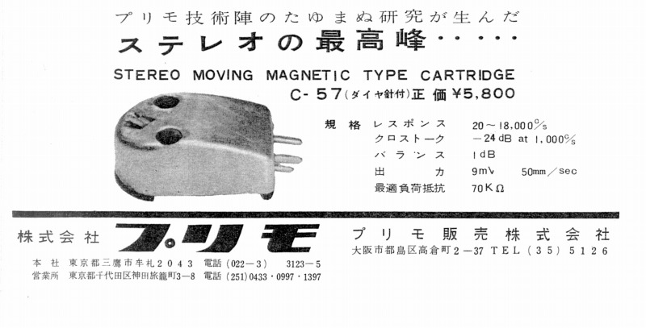

プリモのアナログ製品について
当サイトでは、2010年2月より、アナログディスク関連の製品のデータベースを
作成しております。その際に当サイトのメインであるヘッドフォンのブランドの
各インデックスページの末尾に、そのブランドのアナログ関連製品のページへの
リンクを設定しています。しかしプリモについてはありません。
プリモについては、故 長岡鉄男氏の著作等でかつてカートリッジ等を扱っていたのを
ご存じの方もいらっしゃるかもしれません。しかし有効な資料が手元になく、アナログ
関連製品のページの構築を断念いたします。本体のヘッドフォンサイトでは資料の
追加入手で情報が追加されることがありますが、アナログ関連製品については
余技として手元資料のみで行う予定ですので、今後も追加予定はありません。
なおデータベースができない理由はアナログ関連の活動が1960年代以前の為です。

現時点で管理人所有の唯一のプリモのアナログ関連製品資料。1960年の雑誌広告。